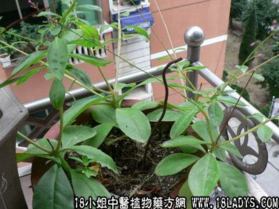

别名：金钱豹。
植物名：金钱豹。
生长环境：本品为缠绕草木。生于山地林下潮湿土壤，或栽培。
分布：广东多为栽培，我国西南有野生。
入药部分：根。
采集期：夏季。
自采地点：大山。
性味：性凉、味甘淡。
功能：清肺、生津、降气、止咳、散瘀。
主治、用量和用法：1、痨伤咳血：干根5钱至1两、猪瘦肉适量，清水煎服；2、苦伤：用法同上。
验方：（治劳伤咳血方）土人参5钱、白毛鸡血藤根5钱、五爪龙根5钱、苦灯笼根5钱，清水三碗半，煎成一碗服。
（方解）土人参清肺降气：白毛鸡屎藤顺气、除痰、止咳、散瘀；五爪龙化气、除痰、止咳、止血；苦灯笼根清热、化气、祛瘀、止血。合为苦凉轻泄、降气、宁咳、止血之剂。
（方歌）劳伤咳血莫担忧，白毛鸡屎土人参，五爪苦灯笼用强，祛瘀清金血自收。